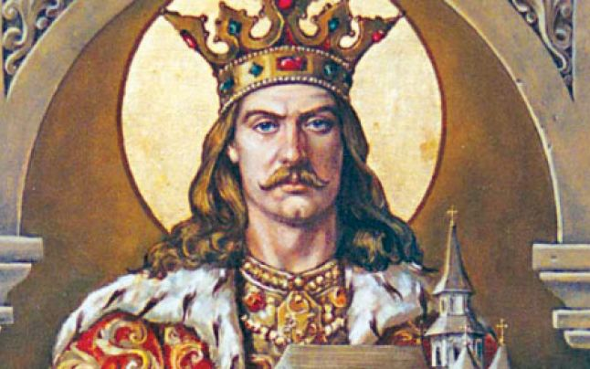
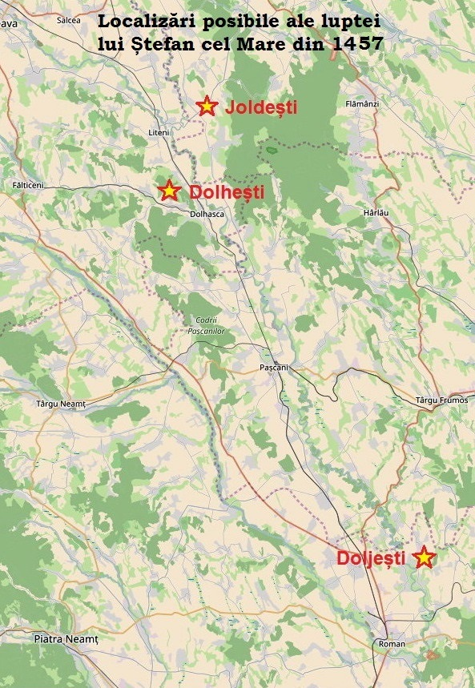

Conform tradiției, Ștefan cel Mare s-a născut la moșia tatălui său de la Borzești, ca fiu nelegitim al viitorului domn al Moldovei, Bogdan al II-lea și al Oltei. Bogdan era la rândul său fiu nelegitim al lui Alexandru cel Bun, iar soția sa, Oltea provenea dintr-o familie de boieri de lângă Bacău, cei doi cunoscându-se în perioada în care Bogdan s-a aflat în exil la curtea lui Vlad Dracul. Familia a mai avut încă trei băieți: Ioachim, Ion și Crâstea și două fete: Maria și Sora.
Data nașterii nu este cunoscută cu certitudine, cele mai plauzibile variante fiind anii 1438 sau 1439.:p. 36 Despre copilăria lui Ștefan cel Mare nu sunt date cunoscute, cel mai probabil acesta și-a petrecut-o la reședința familiei.
În toamna anului 1449, tatăl său, Bogdan sprijinit cu un corp de oaste trimis de Iancu de Hunedoara, învinge armata lui Alexandru al II-lea la Tămășeni, lângă apa Moldovei, la 12 octombrie 1449 și se proclamă domn.Alexandru se refugiază în Transilvania, de unde va încerca să își recapete tronul. La rândul său, Bogdan, după o încercare nereușită de a căpăta sprijinul și protecția polonezilor, și-a îndreptat eforturile diplomatice către Ungaria.
La 11 februarie 1450, Bogdan emite în „târgul de jos” — Roman — un hrisov de recunoaștere a suzeranității lui Iancu de Hunedoara, căruia îi făgăduiește sprijin și ajutor, în orice împrejurare, pentru ca în schimb „iubitul nostru părinte să ne ocrotească sub mâna sa și să ne apere de orice dușmani ai noștri”. La sfârșitul actului, unde sunt enumerați martorii care girau acel document este menționată, imediat după domn credința iubitului meu fiu, Ștefan Voevod. Actul reprezintă prima atestare documentară a viitorului domn al Moldovei. Din menționarea de către tatăl său ca asociat la domnie, rezultă Ștefan împlinise în 1450 cel puțin unsprezece ani, vârsta minimă impusă de cutumele vremii pentru o astfel de demnitate.
Ștefan cel Mare a fost căsătorit de trei ori. Dacă predecesorii săi încercaseră prin căsătorii și alianțe matrimoniale să se apropie de suzeranii lor catolici, regii Ungariei și Poloniei, politica dinastică a lui Ștefan cel Mare privind căsătoriile a fost diferită - după cum remarca istoricul P. P. Panaitescu - toate trei soțiile lui sunt principese ortodoxe din țări vecine: Evdochia, fiica lui Simeon Olelkovici(d) de la Kiev, Maria din Paleologii de la Mangup, în Crimeea, Maria, fiica lui Radu cel Frumos din Țara Românească.
Căsătoria cu Evdochia a avut loc la 5 iulie 1463 când, după cum scrie Grigore Ureche, luatu-s-au doamnă de mare rudă, pre Evdochiia de la Chiev, sora lui Simeon Împăratul. Iară cronicariul cel leșescu scrie că au fostu Evdochiia fată lui Simeon Împăratul, iară nu soră.Căsătoria a durat doar patru ani. Din această căsătorie au rezultat doi băieți și o fată. Băieții, Bogdan-Vlad născut în 1466 și Petru născut în 1467, au murit amândoi de tineri în anul 1479, la câteva luni distanță, fiind îngropați împreună în același mormânt. Fata, Elena, avea să se mărite cu fiul țarului Ivan al III-lea al Rusiei. Evdochia moare și ea în 1467, posibil la nașterea lui Petru, fiind înmormântată în Biserica Mirăuți din Suceava.
La 14 septembrie 1472 Ștefan se căsătorește din nou, cu Maria, din familia domnitoare din micul regat grecesc pontic Mangop-Theodoro, din Crimeea. Isaac, fratele noii doamne, poartă titlul de „domn de Theodoro și al întregii Khazarii”, iar Mariei înseși i se atribuie o multiplă obârșie împărătească.Cuplul nu a avut copii. Căsătoria a fost una de conveniență și interes politic, care a durat atâta timp cât acest interes a existat.
În anul 1475, după divorțul de Maria de Mangop, Ștefan s-au încununat cu doamna Voichița, fata Radului Vodă. Căsătoria avea să dureze până la moartea domnului, Maria Voichița supraviețuindu-i încă șapte ani. A murit în 1511 find înmormântată la Mănăstirea Putna. Din căsătoria lor au rezultat doi copii, un băiat, viitorul domn Bogdan al III-lea și o fată, Maria, decedată în 1518 și înmormântată la Mănăstirea Putna.
La începutul lunii aprilie 1457, Ștefan a intrat în Moldova, înaintând spre Suceava, de-a lungul văii Siretului. Era însoțit de o armată de circa șase mii de oameni, din care un corp de o mie de munteni oferit de Vlad Țepeș, iar restul moldoveni din Țara de Jos.
Petru Aron a fost surprins de această acțiune, reușind să strângă în grabă o armată cu care l-a atacat pe Ștefan la Doljești, pe Siret, la 12 aprilie. Petru Aron a fost învins și a părăsit câmpul de luptă. A încercat o nouă rezistență la Orbic, la 14 aprilie, în Joia Mare a anului 1457, dar a fost din nou înfânt și silit să ia calea exilului, în Polonia
Despre locul exact al luptei au existat mai multe variante vehiculate de-a lungul vremii. Majoritatea istoricilor (Nicolae Iorga, Constantin C. Giurescu, Ilie Minea Minea ș.a.) au propus ca loc al bătăliei localitatea Doljești, de lângă Roman, pornind de la relatările cronicilor moldovenești. A. D. Xenopol, pornind de la o versiune a letopisețului lui Grigore Ureche, a presupus că lupta a avut loc la Joldești, în ținutul Botoșani.[10]:p. 13 Cea mai plauzibilă pare a fi cea a lui Alexandru I. Gonța, care identifică drept loc al bătăliei localitatea Dolhești, de pe valea râului Șomuzul Mare, pornind de la toponimul menționat în cronica germană - Dolschecht, dar luând în considerare că acest sat aparținea surorii sale, căsătorită cu Șendrea, viitorul portar al Sucevei.
După câștigarea bătăliilor și alungarea lui Petru Aron, Ștefan va organiza o mare ceremonie publică de încoronare, într-un loc numit Direptate, pe valea Siretului.